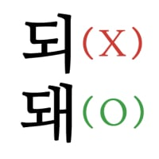

그는 조선 옷을 입고 조선 말을 하며 조선의 음식을 먹으니 조선 사람이 아니겠는가
거기에 효까지 알면 조선인이지
그건 니가 정하는게 아니에요
니가?
니가 정하는것고 아니고 니가가 정하는것도 아니고 니가가 니가가아니다 맞다하는것도 니가할수있는 일은아니다 니가니가니가니가니가니가는 고양이들이싸울땣내는소리로써
이런 인종 차별자새끼
뻐킹레이시스트놈!
니가는 자기 정체성도 맘대로 정하면 안된다는 말은 너무 레이시스트 같아요 우우 나쁜사람
어크 조선 흑인 선비님이시다
그래도 방있는 횟집? 같은덴
조금씩 주더러
나 친한형 한 이십년전쯤에 고급 술집약간 이상한 업소아니고 건전 갸라오케직원이었는데 선동열이 몇십만원 팁줫따고 갓동열 찬양했음 ㅋㅋ
그것도 필수는 아니고 같이온 손님 많은데 혼자 테이블 맡은 분에게 잘 봐달라고 + 수고비 겸 주는 느낌...?
고급 소고기 집이나 횟집은 큰 돈 아니라도 팁 주면 서비스가 달라짐
평소에 나오지 않던 음식이나 서비스 요리도 더 가따주고 더 친절해지고 조금이라도 더 챙겨줌
이게 사람이 하는 일이라 그렇게 되더라
비싸고 격식차린곳은 관례적으로 주는 곳 있음 근데 안줘도 문제안됨
그리고 그게 원래 팁의 의미였고
좋은곳에서 잘 접대해줬으니 고맙다는 의미에서 주는게 팁인데
이게 변질되어버려서 졸부들 깡패들 돈자랑이 되었고
미국에서는 이게 지들 월급에 속하다보니 안주면 미친놈 취급하는 당연한 돈이 되어버림
그건 약간 서비스료같은건데 보통 그렇게 쥐어주면 더 좋은 부위에 더 많은 보상이 돌아옴.
보통 종업원이나 주방장에게 준 돈보다 더 많은것이 돌아오니 서로 윈윈임.
본문에 팁을 안준다는건 의무랑 관련된 얘기고
고객에게 고지되지않은 서비스를 요구하기위한 추가비용 지급은 있었지
사장님 스페셜 같은 느낌으로 챙겨달라
아니면 니가 여기와서 나 챙기느라 고생이 많다
그런느낌
손님이 알아서 챙겨주는걸 문화로 만들고 안해주면 욕하는 것들 많은거 봐선 이거 자리잡히면 진짜 끔찍해진다 이삿짐 센터도 결혼식도 메이크업도 미용도 다 비용에 포함됐는데 피곤하게 커피챙겨주고 간식챙겨주고 그런데도 눈치까지 봐야하고
ㄹㅇ 이삿짐 웨딩 ㅅㅂ 다 망해야함
룸형식으로 된 고급일식당이나 소고기집같은데 가서 담당하는 서버분에게 팁 몇만원 드리면 확실히 좋아짐.
한번은 중앙에 중정있고 중정을 둘러서 룸으로 된 소고기집 갔는데 술도 좀 먹고 하는데 서버아주머니 한명이 계속 들어오시길래 물어보니 여긴 룸마다 담당이 있다 그래서 수고하신다고 3만원 드리고 담배 어디서 피워야하냐고 물으니 그냥 룸에서 피우시라고 해서 괜찮아요?하니까 뭐 제 담당이니까 제가 알아서 하면 되요 하더라고.
참치집 일식집도 주방장이 주방장에게 팁 몇만원 주면 뭐 예를들어 5만원코스 8만원 12만원 이렇게 있으면 비싼거 시키지말고 적당한거 시키고 팁주면 더 좋은 부위들 더 좋은 서비스들이 확실히 따라옴.
내가 더 좋은 서비스를 원한다
생각보다 좋은 서비스를 받았다
이럴때 주는게 팁인데
미국은 무슨 키오스크에도 팁을 내놓으라 하니 빡치지
일식집 주방장은 어떻게 만나 직접서빙오나
바 형식으로 된 곳도 있고
한번에 전 부위가 다 안나오는곳들도 많아서 새로운 부위 직접 가져다주는 곳이 꽤 있음.
중정이있는 고기집..
중앙정보...
ㄹㅇㅋㅋ

한국 팁은 오천원에 만원 감싸서 오천만원이라고 술잔에 감아주던데 ㅋㅋㅋㅋ
인토네이션 어떻게저렇게정확하게하냐 외국어 저렇게잘배우는사람 부럽
ㅋㅋ 미국은 세금포함 가격으로 표기하면 세금에도 팁 붙일듯
영수증에 가격+세금 나눠져서 나오고 손님이 직접팁 계산해서 적어넣는 시스템이라 상관없었는데 어느순간부터 영수증에 손님 계산하기 편하라고(는 명분이고 이정도 팁은 줘야한다는 무언의 압박으로) 18%는 얼마, 20%는 얼마 팁계산도 미리 다 된버전이 써져나옴 근데 그걸 잘 뜯어보면 은근슬쩍 스리슬쩍 세금도 다 합한 가격에 18%이런식으로 계산되있는 셈법이라 따지자니 얼마 차이안나는 돈에 쪼잔한사람되는 것 같기도 하고 이젠 세금에도 팁을 내야하냐 사람들이 질려하는 것
팁이 의무처럼 굳어지면 계산할 때부터 부담이죠
자기가 주고 싶을 때 주면 괜찮아. 의무가 되면 빡치지
우리도 팁 받아야되
그래야 골목 상권이 살아
지금도 경기 개판인데
미국처럼 팁을 강제하면 소비 더죽을듯
상권 사는게 아니라
실리콘밸리에 테이크아웃 식당인데(애초에 테이블이 없음)
그냥 퍼서 담아주는데도 키오스크에 팁 선택란이 뜨더라.
시발 그냥 퍼주는거잖아? 안퍼주면 장사 안해?
최소한의 서비스 이상의 무언가에 대한 감사의 의미라고 봐야하는데
팁 받으니깐 기본급 내려도 되겠네? 이게 되면서 기본급이 낮으니 팁은 무조건 줘야되는걸로 바뀜
팁 받는 사람도 팁은 어차피 받는 돈이 되니 최소한의 서비스를 해도 받음 서비스 질이 크게 향상되지도 않음
기본급 구조 안바꾸면 악순환 안바뀔거임
난 여기서 이런 선택을 해버려
한국이 팁이 없는게 기본이라 안줘도 문제없는거지 굳이 돌려줄정도는 아닌데 테이블이 얹어두고 왔나보지?
최종가격표시제 위반의 철퇴 맛을 봐라
선생님은 한국인이 아니라구요!